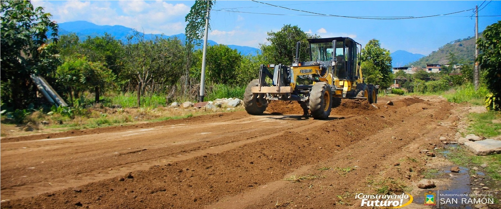

RENOVACIÓN DEL MURO DE CONTENCIÓN DE LA I.E.I JUAN SANTOS ATAHUALPA
La Municipalidad Distrital de San Ramón en coordinación con la Gerencia de Desarrollo Urbano y Rural vienen monitoreando los trabajos de la obra por gestión del Alcade Dubal Olano ante el Fondo Para Intervenciones ante la Ocurrencia de Desastres Naturales – FONDES, Renovación del Muro de Contención de la Institución Educativa Juan Santos Atahualpa, la cual tiene un presupuesto de S/. 1, 343, 800.00.
